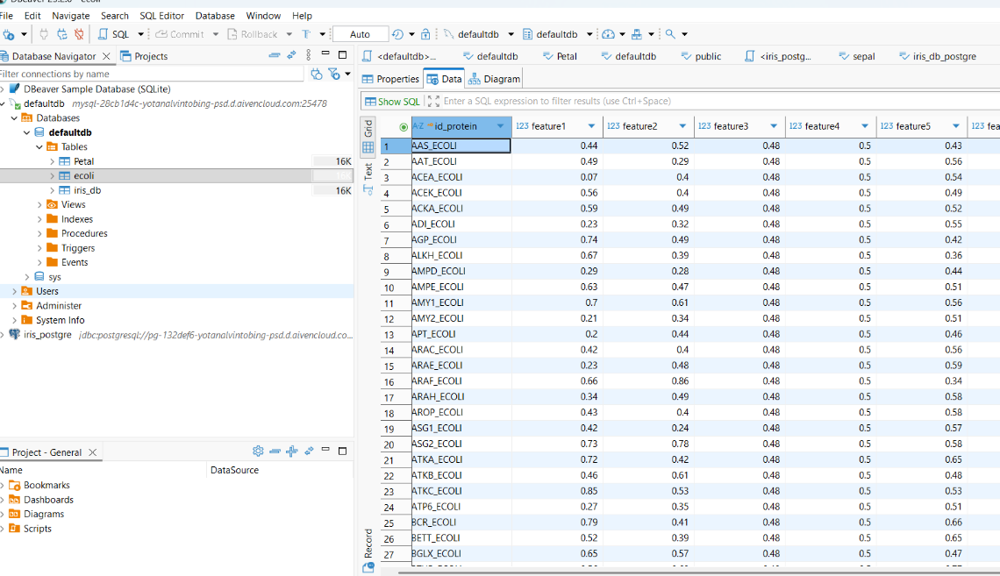
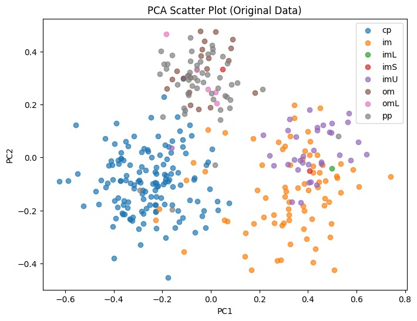
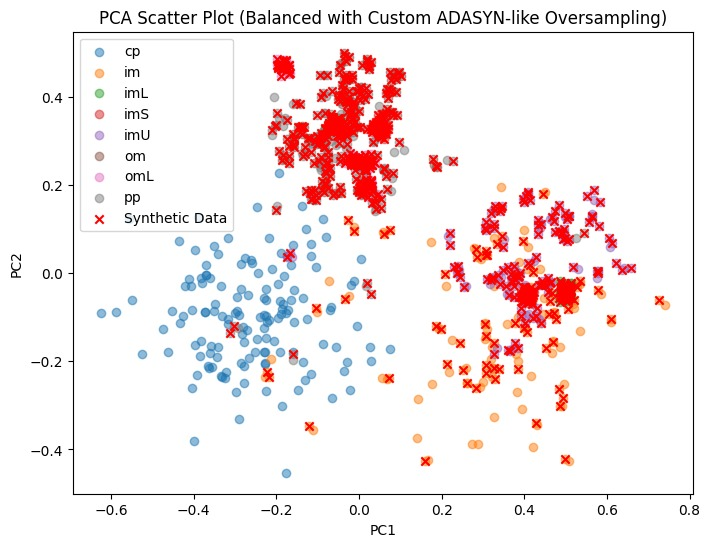
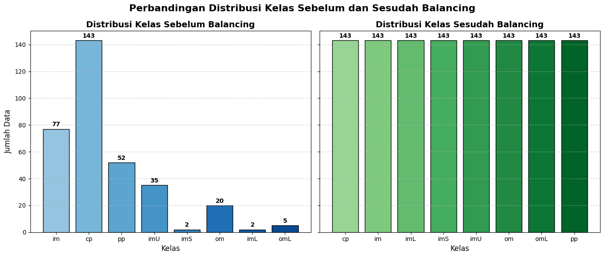

Penyeimbangan Data Ecoli#
Mendownload Dataset Ecoli dari UCI https://archive.ics.uci.edu/#
Membuat Service Mysql pada aiven.io #
Kunjungi laman situs aiven.io melalui link https://aiven.io/
Silahkan login terlebih dahulu jika belum memiliki akun aiven
Buat Project terlebih dahulu sebelum membuat servicenya.
Buat Project terlebih dahulu sebelum membuat servicenya.
Klik “Create Service” dan pilih databse Postgre sebagai databasenya.
Buat Service untuk MySQL
Koneksikan aiven.io ke Dbeaver#
Data Ecoli tersebut akan disimpan pada Dbeaver dan akan dikoneksikan kepada aiven.io
berikut adalah cara membuat database Mysql dan Postgresql di Dbeaver
Install Dbeaver melalui sites resmi https://dbeaver.io/download/.
Buat Database baru dengan source MySQL pada Dbeaver.
Koneksikan Database dengan cloud Database aiven melalui kredensial service MySQL yang disediakan aiven.io.
Buat tabel database terlebih dahulu dengan “SQL Editor -> Open SQL Script”.
Setelah tabel terbuat. Insert data MySQL dengan data Ecoli,
SImpan Dataset Ecoli didalan Mysql#

Kunjungi halaman UCI berikut untuk mendapatkan dataset Ecoli,setelah itu lanjutkan dengan menekan tombol download
Penyeimbangan data Ecoli dilakukan untuk mengatasi masalah ketidakseimbangan kelas, di mana jumlah data pada kelas mayoritas jauh lebih banyak dibandingkan kelas minoritas. Jika dibiarkan, model machine learning cenderung bias dengan hanya mengenali kelas mayoritas, sementara kelas minoritas—yang justru sering memiliki informasi biologis penting—terabaikan. Dengan menyeimbangkan data, distribusi antar kelas menjadi lebih adil sehingga model mampu belajar secara seimbang
import pandas as pd
import matplotlib.pyplot as plt
import numpy as np
from sklearn.decomposition import PCA
from sqlalchemy import create_engine
from collections import Counter
# === 1. Koneksi ke MySQL Aiven ===
host = "jordan-sql-jordanhutahaean87-d5bc.d.aivencloud.com"
port = 17562
user = "avnadmin"
password = "AVNS_1iBbfJyj8bc9NehEBBk"
database = "defaultdb"
engine = create_engine(f"mysql+pymysql://{user}:{password}@{host}:{port}/{database}")
# === 2. Ambil data dari tabel ===
query = "SELECT * FROM ecoli;" # pastikan tabel 'ecoli' ada
df = pd.read_sql(query, engine)
print("Jumlah baris:", len(df))
print(df.head())
# === 3. Pisahkan fitur & label ===
X = df[[f"feature{i}" for i in range(1, 8)]].values
y = df["class_label"].values
# === 4. PCA untuk data asli ===
pca = PCA(n_components=2)
X_pca = pca.fit_transform(X)
plt.figure(figsize=(8,6))
for label in np.unique(y):
idx = (y == label)
plt.scatter(X_pca[idx,0], X_pca[idx,1], label=label, alpha=0.7)
plt.title("PCA Scatter Plot (Original Data)")
plt.xlabel("PC1"); plt.ylabel("PC2")
plt.legend(); plt.show()
# === 5. Custom Oversampling ADASYN ===
class_counts = Counter(y)
print("Distribusi kelas sebelum balancing:", class_counts)
max_class_size = max(class_counts.values())
X_res, y_res = [], []
for cls in np.unique(y):
X_cls = X[y == cls]
n_samples = len(X_cls)
# berapa tambahan yang perlu dibuat
n_to_add = max_class_size - n_samples
# simpan data asli
X_res.append(X_cls)
y_res.extend([cls] * n_samples)
if n_to_add > 0:
# sampling dengan replacement
idx_choice = np.random.choice(range(n_samples), size=n_to_add, replace=True)
X_new = X_cls[idx_choice].copy()
# tambahkan noise acak kecil
noise = np.random.normal(0, 0.01, X_new.shape) # sd=0.01 → bisa diatur
X_new = X_new + noise
X_res.append(X_new)
y_res.extend([cls] * n_to_add)
# gabungkan
X_res = np.vstack(X_res)
y_res = np.array(y_res)
print("Distribusi kelas setelah balancing:", Counter(y_res))
# === 6. Tandai data sintetis ===
X_rounded = np.round(X, 5)
X_res_rounded = np.round(X_res, 5)
synthetic_mask = [tuple(x) not in set(map(tuple, X_rounded)) for x in X_res_rounded]
# === 7. PCA untuk hasil balancing ===
X_res_pca = pca.transform(X_res)
plt.figure(figsize=(8,6))
for label in np.unique(y_res):
idx = (y_res == label)
plt.scatter(X_res_pca[idx,0], X_res_pca[idx,1], label=label, alpha=0.5)
# Tandai synthetic data dengan X merah
plt.scatter(X_res_pca[synthetic_mask,0], X_res_pca[synthetic_mask,1],
c="red", marker="x", label="Synthetic Data")
plt.title("PCA Scatter Plot (Balanced with Custom ADASYN-like Oversampling)")
plt.xlabel("PC1"); plt.ylabel("PC2")
plt.legend(); plt.show()

PCA dipakai untuk menurunkan dimensi dari 7 fitur → 2 dimensi (PC1 & PC2).
Visualisasi:
Data ditampilkan dalam scatter plot.
Setiap kelas (class_label) digambarkan dengan warna berbeda.
Memberi gambaran distribusi asli antar kelas.

Penjelasan:
Identifikasi data sintetis dengan membandingkan data baru dengan data asli.
PCA diterapkan lagi pada data hasil balancing (X_res).
Scatter plot hasil balancing:
Semua kelas ditampilkan kembali dengan warna berbeda.
Data sintetis ditandai dengan simbol X merah → agar jelas mana yang asli dan mana yang hasil generate.
Hasil ini menunjukkan bahwa distribusi data sudah lebih seimbang.
import matplotlib.pyplot as plt
import numpy as np
from collections import Counter
# Hitung distribusi sebelum & sesudah balancing
class_counts_before = Counter(y)
class_counts_after = Counter(y_res)
# Ambil label kelas & jumlah data
labels_before = list(class_counts_before.keys())
values_before = list(class_counts_before.values())
labels_after = list(class_counts_after.keys())
values_after = list(class_counts_after.values())
# Warna otomatis
colors_before = plt.cm.Blues(np.linspace(0.4, 0.9, len(labels_before)))
colors_after = plt.cm.Greens(np.linspace(0.4, 0.9, len(labels_after)))
# Buat figure dengan 2 subplot
fig, axes = plt.subplots(1, 2, figsize=(14,6), sharey=True)
# --- Plot sebelum balancing ---
bars1 = axes[0].bar(labels_before, values_before, color=colors_before, edgecolor="black")
axes[0].set_title("Distribusi Kelas Sebelum Balancing", fontsize=14, fontweight="bold")
axes[0].set_xlabel("Kelas", fontsize=12)
axes[0].set_ylabel("Jumlah Data", fontsize=12)
axes[0].grid(axis="y", linestyle="--", alpha=0.6)
# Tambahkan label di atas batang
for bar in bars1:
axes[0].text(bar.get_x() + bar.get_width()/2, bar.get_height()+1,
str(bar.get_height()), ha='center', va='bottom', fontsize=10, fontweight="bold")
# --- Plot sesudah balancing ---
bars2 = axes[1].bar(labels_after, values_after, color=colors_after, edgecolor="black")
axes[1].set_title("Distribusi Kelas Sesudah Balancing", fontsize=14, fontweight="bold")
axes[1].set_xlabel("Kelas", fontsize=12)
axes[1].grid(axis="y", linestyle="--", alpha=0.6)
# Tambahkan label di atas batang
for bar in bars2:
axes[1].text(bar.get_x() + bar.get_width()/2, bar.get_height()+1,
str(bar.get_height()), ha='center', va='bottom', fontsize=10, fontweight="bold")
# Judul utama
fig.suptitle("Perbandingan Distribusi Kelas Sebelum dan Sesudah Balancing", fontsize=16, fontweight="bold")
plt.tight_layout()
plt.show()
